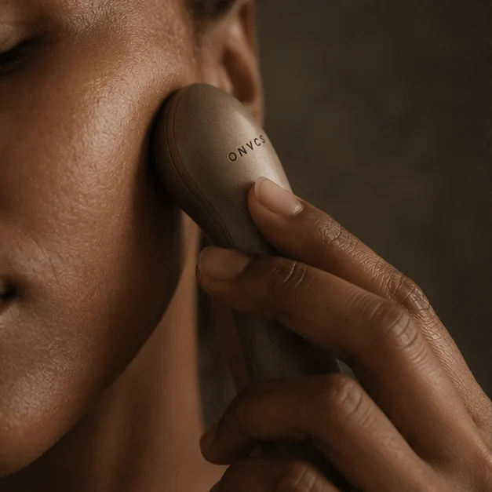
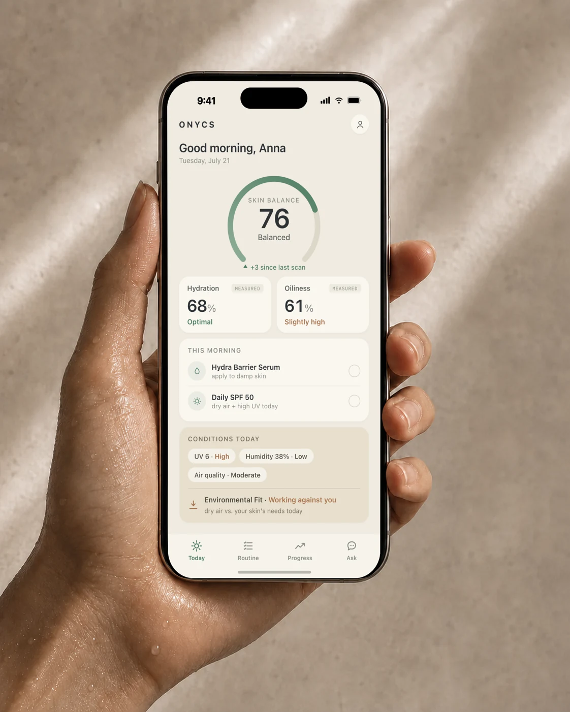
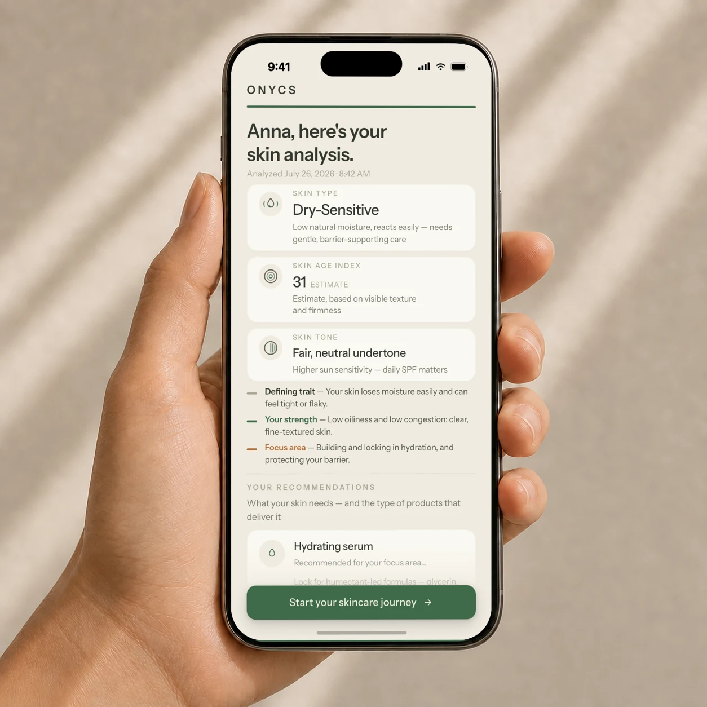

Measure
Capture your skin’s data with the ONYCS handheld device, along with the external factors that affect your skin’s state and performance.
Personal skin intelligence
ONYCS reads how your skin changes and turns real measurements into personalized guidance—so you can understand what it needs and what actually works.
Early members will be first to experience ONYCS at launch.

Capture your skin’s data with the ONYCS handheld device, along with the external factors that affect your skin’s state and performance.
ONYCS turns your skin data into clear insight—your skin type, what it needs, and how it reacts to products and lifestyle.
Get a plan tailored to your skin and track its evolution— precision skincare in your pocket, for skin that is healthy, radiant, and ages well.
The solution
An AI-native app paired with a handheld device. The device reads your skin; the app turns those readings into insight and a plan made for you. Together, precision skincare that fits in your hand.


The value
Most skincare is guesswork. We buy products on hope—but there is no one-size-fits-all skin, and finding what works means endless trial and error. ONYCS brings precise, continuous insight into your hands, so healthier skin stops being a guessing game.

Discover your true skin type, your skin age index, and get a plan built around what your skin actually needs. No more one-size-fits-all routines—just precision skincare, shaped for you.

See how your skin improves as you follow your plan, and how it reacts to new products, seasons, and environments. You always know how to care for your skin today.
Today’s skincare is endless noise—thousands of products, endless opinions, and marketing you cannot tell from real advice. Ask ONYCS cuts through it. It knows your measurements, patterns, and conditions, and gives you answers that fit your skin.
Ask about your results, a new product, or your routine and get clear, personal guidance built around your own skin.

The science
ONYCS captures the signals that define your skin and turns them into clear, personalized insight. So you can give your skin exactly what it needs—to be healthier, more radiant, and age beautifully.
Precision sensors read core signals such as hydration and oiliness—the same properties used to understand skin condition.
ONYCS builds your skin profile—type, texture, and how it is aging—the lasting traits that shape how your skin behaves.
ONYCS factors in local UV, humidity, and air quality because your environment shapes how your skin performs.
Together, these form your complete skin profile—measured, not guessed.
“We track our steps, our sleep, our heart rate—but not our skin, the largest organ we have. We’re building ONYCS to bring skincare up to the level of every other health metric.”
The ONYCS founding team
Launching in early 2027
Early members get first access when ONYCS launches.